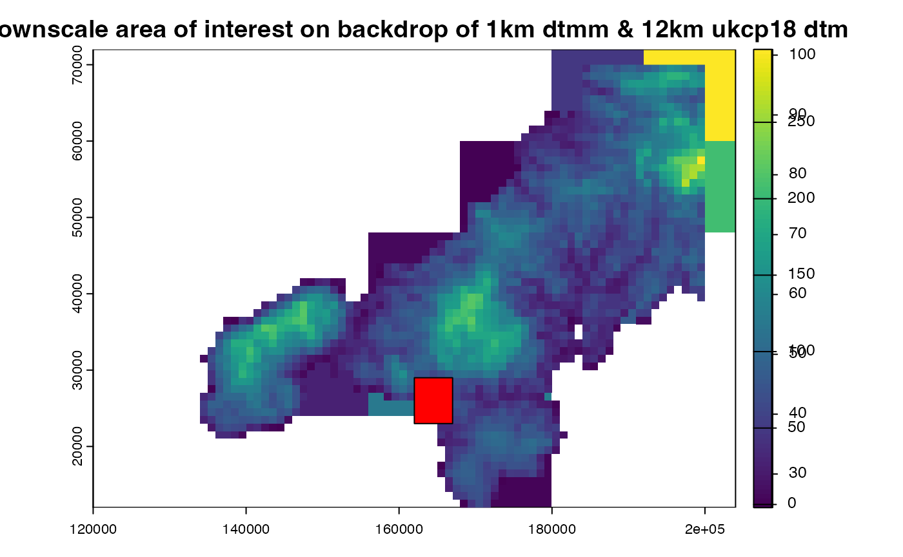
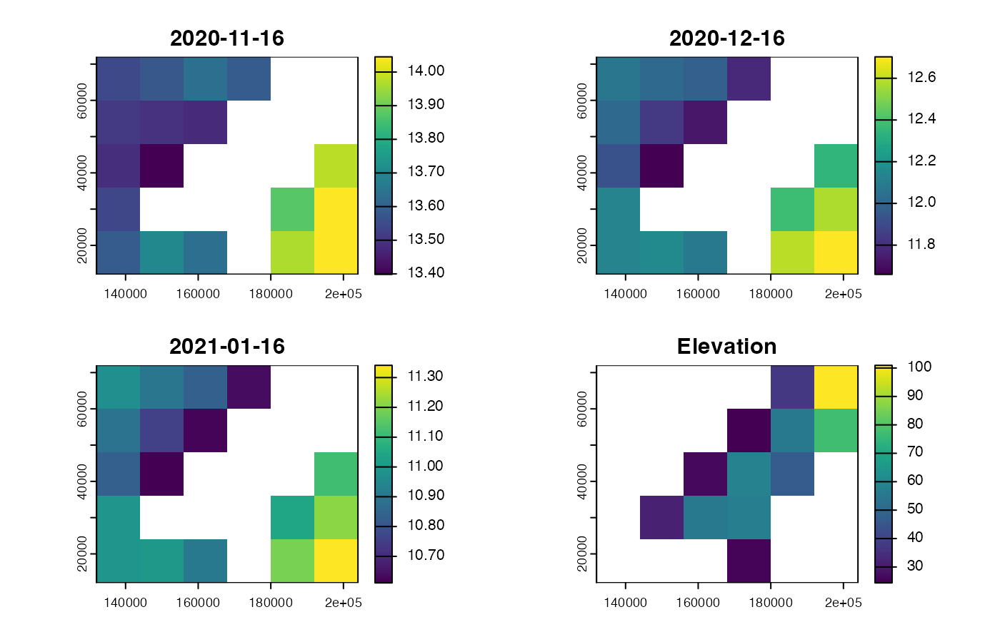
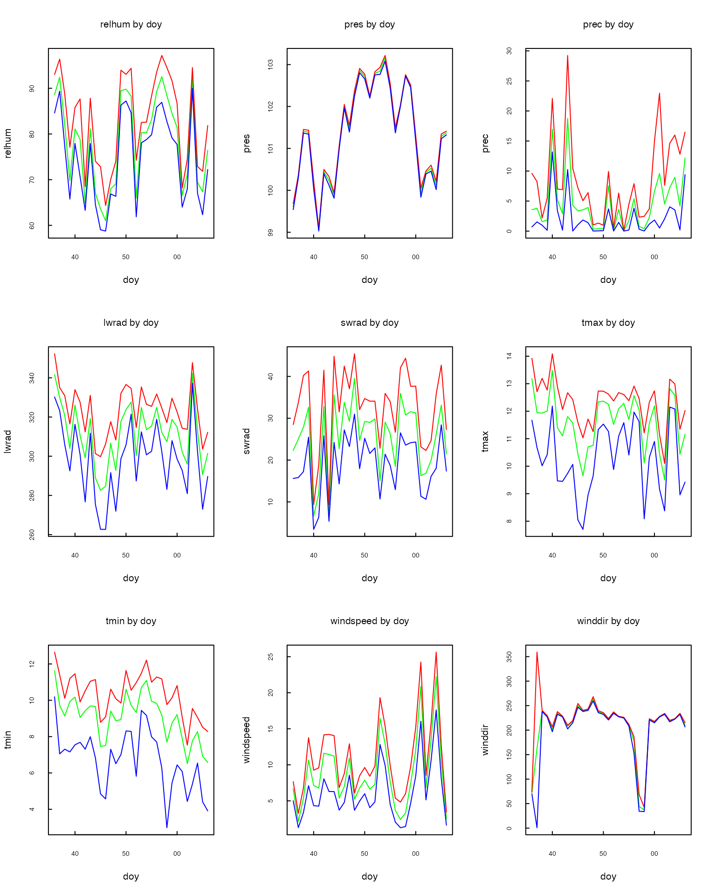
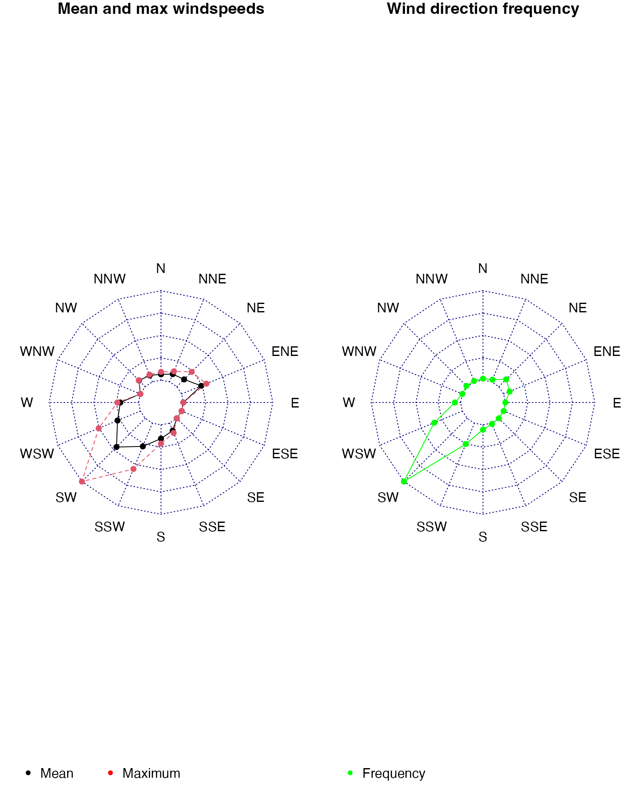

Introduction
Uses of future downscaled climate data - future climate equivalent of weather data that captures mesoclimatic effects.
Permit further downscaling such as to microclimate / beneath canopy conditions.
Climate data
Climate data is available at many different spatial and temporal resolutions, the extent of which may vary from global to sub-national. Typically, future climate predictions derived from global and regional climate models will have a spatial extent of the order of tens of kilometres and either a daily or hourly resolution. In certain cases, model outputs may conform to a time sequence that does not match future calendar dates.For example, UKCP18 data uses twelve 30-day months for every year.
The variables (and their units) provided by different climate models also vary. Long and shorwave radiation variables, in particular, can vary widely in terms of their meaning and units. UKCP18, for example, only provides net downward longwave and shortwave radiation fluxes, whereas many applications may require absolute downward values.
Variables such as windspeed and temperature may also be referenced to different heights above ground, whereas the pressure can be referenced to local elevation or sea-level.
Some common sources of historic and future climate data are:
- UKCP18 - global, regional and national (UK) daily data available at a spatial resolution of 60 to 12 km^2 (some national data at 2.5km^2) - link
Historical only sources include:
- ERA5 - global historical re-analysis hourly data at a spatial resolution of ??? - link
Other downscaling data requirements
The spatial and temporal downscaling of climate data to finer resolutions requires additional data of the area to be downscaled, including fine resolution elevation data and a land/sea mask and sea surface temperature timeseries if close to the coast.
Sources of future and historic sea surface temperature include:
North Atlantic ???? - derived from the same models and model runs that generate UKCP18 predictions - link
ERA5 - historic reanalysis data includes hourly sea surface temperature at a spatial resolution of ??? - link
Elevation and land/sea masks matching the climate input data are also required, ideally sourced from the models generating these climate inputs. Examples include:
UKCP orography data (that can be converted to elevation using the
mesoclimfunction????)ERA5 dtm??
The sea mask used to generate climate model data is of particular importance. MORE
2 Preprocessing coarse resolution climate data
For the purposes of illustrating the data perepataion of historic and future climate data we will consider the UKCP18 regional data (daily at 12 km^2) covering the United Kingdom. This data requires many pre-processing steps due to the format and variables provided.
UKCP18 climate files are LARGE!! Downloadable from the CEDA archive (ref) they cover 10 years of data for the whole of the UK (Europe or world depending on the domain), each variable file is therefore typically > 100MB. Therefore it is important to define the area of interest and timespan for which downscale data is required.
Defining area of interest
Spatial downscaling requires digital terrain models covering not only
for the immediate area of interest for which we require downscaled
outputs, but also a wider area to ensure effects such as wind and
coastal downscaling effects are captured. mesoclim makes
use of two key extents and resolutions of dtm to inform its spatial
downscaling:
dtmf- a fine resolution digital terrrain map at covering the area and resolution at which downsclaed climate outputs are required.dtmm- a digital terrain map of the same extent as the dtmc and at the resoution of the dtmf used to calculate coastal effects.dtmc- a coarse resolution digital terrain map at the same resolution and projection as the original climate data. Typically this should be sourced from the providers of climate data so it matches the information used in climate modelling.The area covered should be the same of greater than that of thedtmm
All DTMs are assumed to cover land ONLY. Sea cells for all DTMs are expected to have the value NA.
In this vignette we use small sample files supplied with the package: two months (December 2020 - January 2021) of UKCP18 regional data and the matching sea surface temperature data covering south-west England.
# Directory holding UKCP18 climate .nc files - here the package sample files
dir_ukcpdata<-system.file('extdata/ukcprcm_sample',package='mesoclim')
# Directory holding sea surface temperature .nc files - here the package sample files
dir_sst<-system.file('extdata/sst_sample',package='mesoclim')
# Load coarse resolution DTM of the whole of the UK - provided by UKCP18
ukdtmc<-terra::rast(system.file('extdata/ukcp18rcm/orog_land-rcm_uk_12km_osgb.nc',package='mesoclim'))
# Define coarse resolution DTM of the widest area of interest from ukcp18 dtm
dtmc<-terra::crop(ukdtmc,ext(120000, 200000, 10000, 70000))
# Load medium resolution DTM (including wider area for capturing wind/coastal effects)
dtmm<-terra::rast(system.file('extdata/dtms/dtmm.tif',package='mesoclim'))
# Load a fine resolution dtm of the area and resolution for which we want downscaled climate values
dtmf<-terra::rast(system.file('extdata/dtms/dtmf.tif',package='mesoclim'))
# Show local downscale area within wider dtmm
# Show local downscale area within wider dtmm
aoi<-vect(ext(dtmf))
plot.new()
plot(dtmc,main='Downscale area of interest on backdrop of 1km dtmm & 12km ukcp18 dtm')
plot(dtmm, add=T)
plot(aoi,add=TRUE,col="red")
Creation of standard inputs for downscaling
Different sources of climate and ancillary data provide different
variables using different SI units, in varying formats and using
different file naming conventions. Therefore, mesoclim
provides several functions to convert and check common sources of
climate data into standard inputs for subsequent downscaling. Here we
look at UKCP18 regional data as an example.
To download climate directly directly from source, we utilise
functions within the microclimdata package which we install
from github. This package interfaces with a number of geospatial data
repositories. While data are free, you will need to register to download
the data and provide your user credentials to the functions. For
simplicity, all functions requiring user credential take as an input a
single data.frame in which all credentials are stored. This should be
saved on a secure location on your local drive. The inbuilt dataset
credentials provides a template to which your own usernames
and passwords should be added. It also contains weblinks for registering
to use the services.
To access ERA5 data from the European Centre for Medium-Range Weather Forecasts climate data store (CDS):
Register for an ECMWF account here. Upon registering you will need to accept all of the Terms and Conditions listed at the bottom of the form.
Then, navigate to the CDS site here and login using the button in the top right. Once logged in, hover your mouse over your name in the top right, and click on the option “Your profile” that appears (this should bring you to this page. Here you will find the email address used to access the site and and Personal Access Token, both which are required for you to remotely download data from the CDS. Copy these into your credentials file - the email address goes under username and the personal access token in place of password.
Each CDS dataset has its own unique Terms of Use. You will need to accept these Terms for ERA5-reanalysis at this page (scroll down to “Terms of use” and accept). This same set of terms also applies for other Copernicus products, including ERA5-land.
- Access to the Centre for Environmental Data Analysis (CEDA) Archive for downloading daily UKCP18 Historic and Future climate data (global coverage). To access UKCP18 data, after registering, you will need to obtain a CEDA access token from this page
For further details see the microclimdata github page here
The code below is not run when building this vignette as it requires user credentials and downloads large files.
# devtools::install_github("ilyamaclean/microclimdata")
# Set output path
pathout<-tempdir()
# Set time period
startdate<-as.POSIXlt('2020/12/01', tz="UTC")
enddate<-as.POSIXlt('2020/12/31', tz="UTC")
# Load your credentials data.frame - see microclimdata
cred_df<-read.csv("path/to/your/credentials.csv", header=TRUE)
### Download UKCP data - WARNING this downloads c. 3 GB of data files!!!
tme<-as.POSIXlt(seq(startdate, enddate, by = "1 day"))
access_token<-"your-ceda-access-token"
microclimdata::ukcp18_download(tme, cedatoken=access_token, pathout=pathout,
collection='land-rcm', domain='uk', rcp='rcp85', member='01')
### Download ERA5 data
tme<-as.POSIXlt(seq(startdate, enddate, by = "1 hour"))
microclimdata::era5_download(dtmc, tme, credentials=cred_df, file_prefix="era5_", pathout=pathout)
### Download NCEP data - six-hourly historic climate data from the NCEP-NCAR reanalysis project
tme<-as.POSIXlt(seq(startdate, enddate, by = "6 hour"))
ncepdata<-microclimdata::ncep_download(dtmc, tme)
ncepsst<-microclimdata::sst_download(dtmc, tme, resampleout = "FALSE", nafill = "FALSE")UKCP18 climate preprocessing
UKCP18 data pre-processing requires several modifications to the original data including:
Conversion of 12 x 30-day months to actual dates.
Conversion of net to downward short and longwave radiation.
The conversion of shortwave radiation is calculated using an estimate of albedo at the same resolution as the climate data. Albedo data can either be provided or constant land/sea albedo values are used.
These conversions are carried out byt the function
ukcp18toclimarray. Outputs are a list of climate variables
and associated data which can be written to file using the function
write_climdata().
# Preprocess UKCP18 data using constant albedo land / sea values
collection<-'land-rcm'
domain<-'uk'
member<-'01'
rcp<-'rcp85'
startdate<-as.POSIXlt('2020/12/01', tz="UTC")
enddate<-as.POSIXlt('2020/12/31', tz="UTC")
# Processes ukcp18rcm files already held in dir_ukcpdata
ukcp18rcm<-ukcp18toclimarray(dir_ukcpdata, dtmc, startdate, enddate,collection, domain, member)
#> Loading clt_rcp85_land-rcm_uk_12km_01_day_20201201-20301130.nc
#> Loading hurs_rcp85_land-rcm_uk_12km_01_day_20201201-20301130.nc
#> Loading pr_rcp85_land-rcm_uk_12km_01_day_20201201-20301130.nc
#> Loading psl_rcp85_land-rcm_uk_12km_01_day_20201201-20301130.nc
#> Loading rls_rcp85_land-rcm_uk_12km_01_day_20201201-20301130.nc
#> Loading rss_rcp85_land-rcm_uk_12km_01_day_20201201-20301130.nc
#> Loading tasmax_rcp85_land-rcm_uk_12km_01_day_20201201-20301130.nc
#> Loading tasmin_rcp85_land-rcm_uk_12km_01_day_20201201-20301130.nc
#> Loading uas_rcp85_land-rcm_uk_12km_01_day_20201201-20301130.nc
#> Loading vas_rcp85_land-rcm_uk_12km_01_day_20201201-20301130.nc
#> Using constant land and sea albedo values - assuming NA values in dtmc are sea!!
# Write preprocessed data
dir_out<-tempdir()
write_climdata(ukcp18rcm,file.path(dir_out,'ukcp18rcm.Rds'),overwrite=TRUE)UKCP18 sea surface temperature preprocessing
Sea surface temperature is not included in the UKCP18 data. For the UK seas surface data for the North Atlantic area for the same corresponding climate models used in the creation of the UKCP18 data is available on ceda. This data is in lat lon projection.
The function create_ukcpsst_data ensures that the sea
surface data matches the corresponding dtmc in the UKCP18 climate data
that has already been prepared - interpolating where necessary to ensure
coast lines match. Sea surface data will match the crs, resolution and
extent of the provided dtmc - which should extend well at least a full
climate grid cell beyond the final downscaling area.
sst<-create_ukcpsst_data(dir_sst,startdate=startdate,enddate=enddate,dtmc=ukcp18rcm$dtm, member="01")
plot(c(sst,ukcp18rcm$dtm))
ERA5 historical climate data preparation
ERA5 hourly reanalysis data, as downloaded using
microclimdata::era5_download(), can be converted to the
standard mesoclim input format using the function
era5toclimarray(). This requires a coarse resolution dtm
and land/sea mask matching the ERA5 grid, which can be derived from ERA5
ancillary data (geopotential and land/sea mask variables). The land/sea
mask is used to correct the diurnal temperature range of coastal grid
cells.
Here we use a sample ERA5 file supplied with the package covering south-west England in January 2020, together with global ERA5 ancillary data (geopotential and land/sea mask). The ancillary data use longitudes of 0 to 360 degrees so are first rotated to -180 to 180 degrees to match the climate data.
era5file<-system.file('extdata/era5raw/era5_sample.nc',package='mesoclim')
ancillary.r<-terra::rotate(terra::rast(system.file('extdata/era5raw/era5_ancillary.nc',package='mesoclim')))
# Convert geopotential to elevation (m)
RadEarth<-6371009
gravity<-9.80665
era5dtm<-(ancillary.r$z * RadEarth)/(gravity * RadEarth - ancillary.r$z)
era5lsm<-ancillary.r$lsm
era5input<-era5toclimarray(era5file, dtmc=era5dtm, lsm=era5lsm,
startdate=as.POSIXlt('2020/01/01', tz="UTC"),
enddate=as.POSIXlt('2020/01/31', tz="UTC"))
names(era5input)
#> [1] "dtm" "tme" "windheight_m" "tempheight_m" "temp"
#> [6] "relhum" "pres" "swrad" "difrad" "lwrad"
#> [11] "windspeed" "winddir" "prec"Checking data inputs to downscaling
The resulting data structures of preprocessing can be checked to ensure there are no missing or unexpected values that may indicate a difference in the expected SI units or incomplete input datasets. This is particularly advisable if the inputs for spatial downscaling are not derived from one of the provided functions.
checkinputs(read_climdata(file.path(dir_out,'ukcp18rcm.Rds')), tstep = "day", plots=TRUE)
#> [1] "Weather observations = 31"
#> [1] "Timesteps= 24 hours for whole timeseries."
#> [1] "Observations from 2020-12-01 to 2020-12-31"
#> [1] "Temperature values are at 1.5 metres above ground level."
#> [1] "Wind speeds are at 10 metres above ground level."
#> Min. Mean Max.
#> cloud 64.230 93.366 100.000
#> relhum 58.749 78.185 97.187
#> prec 0.007 4.707 29.241
#> pres 99.029 101.354 103.217
#> lwrad 262.664 311.413 352.253
#> swrad 3.426 25.562 45.412
#> tmax 7.702 11.612 14.088
#> tmin 2.985 9.053 12.651
#> windspeed 1.275 8.788 25.633
#> winddir 0.817 207.255 359.175
#> elevation 24.399 49.694 100.944
#> [1] "Plotting spatial variation by day of year: red=max, green=mean, blue=min"
#> [1] "Plotting wind direction figures"
#> $dtm
#> class : SpatRaster
#> size : 5, 6, 1 (nrow, ncol, nlyr)
#> resolution : 12000, 12000 (x, y)
#> extent : 132000, 204000, 12000, 72000 (xmin, xmax, ymin, ymax)
#> coord. ref. : OSGB36 / British National Grid (EPSG:27700)
#> source(s) : memory
#> varname : clt (Cloud area fraction)
#> name : Elevation
#> min value : 24.39885
#> max value : 100.94384
#> unit : m
#>
#> $tme
#> [1] "2020-12-01 UTC" "2020-12-02 UTC" "2020-12-03 UTC" "2020-12-04 UTC"
#> [5] "2020-12-05 UTC" "2020-12-06 UTC" "2020-12-07 UTC" "2020-12-08 UTC"
#> [9] "2020-12-09 UTC" "2020-12-10 UTC" "2020-12-11 UTC" "2020-12-12 UTC"
#> [13] "2020-12-13 UTC" "2020-12-14 UTC" "2020-12-15 UTC" "2020-12-16 UTC"
#> [17] "2020-12-17 UTC" "2020-12-18 UTC" "2020-12-19 UTC" "2020-12-20 UTC"
#> [21] "2020-12-21 UTC" "2020-12-22 UTC" "2020-12-23 UTC" "2020-12-24 UTC"
#> [25] "2020-12-25 UTC" "2020-12-26 UTC" "2020-12-27 UTC" "2020-12-28 UTC"
#> [29] "2020-12-29 UTC" "2020-12-30 UTC" "2020-12-31 UTC"
#>
#> $windheight_m
#> [1] 10
#>
#> $tempheight_m
#> [1] 1.5
#>
#> $cloud
#> class : SpatRaster
#> size : 5, 6, 31 (nrow, ncol, nlyr)
#> resolution : 12000, 12000 (x, y)
#> extent : 132000, 204000, 12000, 72000 (xmin, xmax, ymin, ymax)
#> coord. ref. : OSGB36 / British National Grid (EPSG:27700)
#> source(s) : memory
#> names : lyr.1, lyr.2, lyr.3, lyr.4, lyr.5, lyr.6, ...
#> min values : 99.62035, 95.89844, 98.45319, 80.80067, 94.54900, 91.86401, ...
#> max values : 100.00001, 99.81731, 99.96067, 93.42605, 99.26005, 98.11401, ...
#> time : 2020-12-01 to 2020-12-31 UTC (31 steps)
#>
#> $relhum
#> , , 1
#>
#> [,1] [,2] [,3] [,4] [,5] [,6]
#> [1,] 88.56357 88.34118 88.13335 88.00058 92.14062 93.03676
#> [2,] 88.43149 88.26683 88.25626 91.54923 91.22167 91.26904
#> [3,] 88.41774 88.28466 91.92549 91.29295 90.09625 84.99009
#> [4,] 88.17519 90.66784 91.01759 90.09138 84.72496 84.88061
#> [5,] 87.69247 86.33804 85.64431 88.39062 84.64342 84.60410
#>
#> , , 2
#>
#> [,1] [,2] [,3] [,4] [,5] [,6]
#> [1,] 90.45349 90.00584 89.79315 89.36214 96.16406 96.33723
#> [2,] 90.20162 89.93964 89.94615 95.88060 96.12481 96.16478
#> [3,] 90.03578 89.78388 95.81261 96.00877 96.05453 90.55138
#> [4,] 90.08424 94.19198 95.49569 96.38387 90.25480 90.41702
#> [5,] 90.04585 90.23752 90.24439 96.35156 90.05497 90.24802
#>
#> , , 3
#>
#> [,1] [,2] [,3] [,4] [,5] [,6]
#> [1,] 77.26507 77.87514 78.60873 79.10752 86.04688 88.60163
#> [2,] 77.37645 78.00832 78.44548 84.95250 86.69399 88.70822
#> [3,] 77.42781 77.81842 85.21426 85.69575 86.57994 81.97791
#> [4,] 77.43449 83.36456 85.51433 87.01202 82.11404 81.16591
#> [5,] 77.71755 79.29073 79.97250 87.20312 81.59880 80.88330
#>
#> , , 4
#>
#> [,1] [,2] [,3] [,4] [,5] [,6]
#> [1,] 66.40798 66.39803 66.36990 66.18130 70.50781 75.42729
#> [2,] 66.35714 66.40688 66.30943 70.87572 73.24030 77.09542
#> [3,] 66.30167 66.08448 70.88083 72.11401 74.31752 71.45729
#> [4,] 66.04899 70.16302 73.27113 74.48940 72.45557 70.42023
#> [5,] 65.74675 66.40987 67.45663 74.54688 70.52249 69.27760
#>
#> , , 5
#>
#> [,1] [,2] [,3] [,4] [,5] [,6]
#> [1,] 78.31007 78.17056 77.99374 77.92793 83.09375 85.37889
#> [2,] 78.68127 78.56940 78.38058 84.05508 84.85943 85.80004
#> [3,] 79.10574 78.95293 83.61526 84.33736 85.30986 80.87912
#> [4,] 79.25385 83.25273 84.95648 84.55744 80.57698 79.68888
#> [5,] 79.21439 78.94714 78.52038 82.72656 79.37218 78.65591
#>
#> , , 6
#>
#> [,1] [,2] [,3] [,4] [,5] [,6]
#> [1,] 70.66113 71.80393 72.81831 73.38288 81.54688 85.82752
#> [2,] 71.47122 72.60536 73.14812 82.58298 84.34428 87.66299
#> [3,] 72.19615 72.91320 82.76371 83.85348 85.72525 80.79762
#> [4,] 72.74278 82.14063 84.57158 86.31145 81.51485 79.87178
#> [5,] 73.61011 75.84964 76.42957 86.79688 79.55519 78.44402
#>
#> , , 7
#>
#> [,1] [,2] [,3] [,4] [,5] [,6]
#> [1,] 63.72105 63.76364 63.84441 63.74604 65.09375 67.83069
#> [2,] 63.51654 63.62832 63.64472 64.81680 65.91528 68.46497
#> [3,] 63.43317 63.28284 64.96499 65.72710 67.15083 65.73792
#> [4,] 63.39072 64.03547 66.04197 66.63916 66.02885 65.27170
#> [5,] 63.44480 63.71007 63.51971 65.57031 64.96049 64.48643
#>
#> , , 8
#>
#> [,1] [,2] [,3] [,4] [,5] [,6]
#> [1,] 78.53349 78.50360 78.71204 79.44109 86.50781 87.81960
#> [2,] 78.46426 78.50392 79.04792 85.49350 86.29170 86.09309
#> [3,] 78.48014 78.81226 84.56300 84.98653 85.39661 80.11097
#> [4,] 78.32170 82.26695 84.11835 83.80022 79.11431 78.71577
#> [5,] 78.29456 78.24584 77.90600 81.64062 78.50606 78.20901
#>
#> , , 9
#>
#> [,1] [,2] [,3] [,4] [,5] [,6]
#> [1,] 65.25748 65.44998 65.60441 65.63369 68.96875 74.03582
#> [2,] 65.14984 65.36141 65.57529 68.91851 71.16967 73.34831
#> [3,] 64.98520 65.06793 67.25240 68.70508 70.87463 68.15173
#> [4,] 64.69283 65.08683 67.75944 68.27612 66.80392 66.63505
#> [5,] 64.55106 64.78811 64.76565 65.78125 66.01288 65.89237
#>
#> , , 10
#>
#> [,1] [,2] [,3] [,4] [,5] [,6]
#> [1,] 60.21173 60.64576 60.96391 60.91133 65.91406 70.50282
#> [2,] 59.70783 60.03777 60.03414 64.54896 67.86069 72.81219
#> [3,] 59.22193 59.17032 64.82936 66.00124 68.52238 65.37937
#> [4,] 59.05051 63.03970 66.50157 68.71181 65.36897 64.14837
#> [5,] 59.03386 59.99035 60.58223 69.73438 63.36026 61.92192
#>
#> , , 11
#>
#> [,1] [,2] [,3] [,4] [,5] [,6]
#> [1,] 61.28044 60.86900 60.38240 59.89085 59.91406 63.39800
#> [2,] 61.06421 60.65357 59.95337 60.02520 61.16177 64.33891
#> [3,] 60.79414 60.01836 61.27930 61.43716 62.02033 60.20258
#> [4,] 60.72503 61.79021 63.02957 63.51165 60.60356 59.17735
#> [5,] 60.54458 60.16652 59.53530 63.82031 59.75109 58.74914
#>
#> , , 12
#>
#> [,1] [,2] [,3] [,4] [,5] [,6]
#> [1,] 66.88651 66.90848 67.00166 67.06683 66.99219 69.86810
#> [2,] 67.02283 67.02034 66.93254 67.03159 67.87356 70.08146
#> [3,] 67.16654 66.87363 67.46140 67.81039 68.46836 69.07169
#> [4,] 67.44693 67.56356 68.53164 69.28137 69.36485 68.91689
#> [5,] 67.72891 68.08292 68.12498 69.82031 69.10114 68.75732
#>
#> , , 13
#>
#> [,1] [,2] [,3] [,4] [,5] [,6]
#> [1,] 67.46994 67.96775 68.32331 68.54021 69.71875 73.31836
#> [2,] 67.27996 67.71552 67.86557 68.53440 70.43362 74.04012
#> [3,] 66.92439 67.14697 68.81374 69.24100 70.24201 71.39130
#> [4,] 66.58959 67.58594 68.91310 70.36327 70.53672 69.99475
#> [5,] 66.35464 67.61350 68.56297 70.61719 69.85825 69.41246
#>
#> , , 14
#>
#> [,1] [,2] [,3] [,4] [,5] [,6]
#> [1,] 87.53481 87.01334 86.54130 86.31483 91.71875 93.96318
#> [2,] 87.77670 87.29607 86.53245 91.13940 92.22460 93.71753
#> [3,] 87.92892 87.30073 91.54539 91.74589 92.07599 88.34090
#> [4,] 88.08733 91.45944 92.43549 92.77990 88.65815 87.47172
#> [5,] 88.06976 88.46299 88.27905 92.62500 88.19215 86.88029
#>
#> , , 15
#>
#> [,1] [,2] [,3] [,4] [,5] [,6]
#> [1,] 87.84970 87.71696 87.56487 87.22000 90.68750 92.68934
#> [2,] 87.99052 88.06177 87.84632 91.68691 91.83141 92.90549
#> [3,] 88.07650 88.04121 92.05045 92.32449 92.72377 89.07141
#> [4,] 88.03192 91.40468 92.64843 93.04547 89.61453 89.06147
#> [5,] 87.99721 88.37910 88.07378 92.46094 89.09395 88.47999
#>
#> , , 16
#>
#> [,1] [,2] [,3] [,4] [,5] [,6]
#> [1,] 84.76772 85.01650 85.25868 85.59686 92.79688 94.37054
#> [2,] 84.77726 85.02725 85.24987 91.71017 92.84274 93.75872
#> [3,] 84.68752 84.85516 91.25860 91.71490 92.36070 88.72941
#> [4,] 84.63243 89.41241 90.97173 91.85103 88.17713 87.65804
#> [5,] 84.65159 85.53725 85.71053 91.47656 86.88182 86.26581
#>
#> , , 17
#>
#> [,1] [,2] [,3] [,4] [,5] [,6]
#> [1,] 62.29848 62.30313 62.15783 61.86106 65.25781 70.35025
#> [2,] 62.25210 62.36428 62.02004 65.64536 68.32217 73.10565
#> [3,] 62.06211 61.89854 66.62282 67.74955 70.19514 68.07076
#> [4,] 61.96847 67.23148 68.61389 71.80311 68.29327 66.89121
#> [5,] 61.94446 65.07310 65.65183 74.22656 67.49585 65.18808
#>
#> , , 18
#>
#> [,1] [,2] [,3] [,4] [,5] [,6]
#> [1,] 79.36706 79.34429 79.30713 79.13348 80.06250 82.26511
#> [2,] 79.23464 79.35563 79.29479 80.83279 81.22401 82.52164
#> [3,] 78.98465 78.95222 81.02950 81.45383 82.10365 81.04705
#> [4,] 78.53951 80.11631 81.61107 82.25136 81.18414 80.99084
#> [5,] 78.05885 78.59571 79.20348 81.76562 80.50307 80.34302
#>
#> , , 19
#>
#> [,1] [,2] [,3] [,4] [,5] [,6]
#> [1,] 79.31964 79.45532 79.66644 79.70828 79.97656 82.12423
#> [2,] 79.14991 79.29411 79.42995 80.08683 80.90308 82.58449
#> [3,] 79.02989 79.07166 80.37497 80.97696 82.04219 81.18997
#> [4,] 78.93721 80.11606 81.74689 82.02602 80.94604 81.17211
#> [5,] 78.91249 79.15143 78.77778 81.15625 80.11375 80.00506
#>
#> , , 20
#>
#> [,1] [,2] [,3] [,4] [,5] [,6]
#> [1,] 81.36020 81.49124 81.42637 81.42323 86.39062 88.32923
#> [2,] 81.29906 81.18276 81.23721 86.03878 87.06158 87.69903
#> [3,] 80.94817 80.61868 85.11562 85.95393 86.99953 83.01804
#> [4,] 80.24145 82.19656 84.51981 86.12226 82.41439 82.32358
#> [5,] 79.83562 80.08840 80.11471 85.66406 81.66063 81.46833
#>
#> , , 21
#>
#> [,1] [,2] [,3] [,4] [,5] [,6]
#> [1,] 88.25136 88.12344 88.20463 88.62904 92.95312 93.57077
#> [2,] 88.00631 87.96342 88.36819 92.55862 92.75426 92.43955
#> [3,] 87.89754 88.20145 91.99776 92.26104 92.43336 86.25777
#> [4,] 87.48219 90.68873 91.21816 91.64229 86.41923 86.06627
#> [5,] 87.23774 86.97153 86.52125 90.70312 86.17784 85.86588
#>
#> , , 22
#>
#> [,1] [,2] [,3] [,4] [,5] [,6]
#> [1,] 89.46179 90.11156 90.78626 91.68187 96.93750 96.41982
#> [2,] 90.08976 91.02061 91.82350 97.10256 96.37036 95.56560
#> [3,] 91.04466 92.23552 97.18662 96.90605 96.17886 88.04838
#> [4,] 91.55003 96.61482 96.69041 96.35621 87.85622 87.92705
#> [5,] 90.43929 90.02131 90.12309 95.71875 87.35971 86.92866
#>
#> , , 23
#>
#> [,1] [,2] [,3] [,4] [,5] [,6]
#> [1,] 83.09502 84.06512 84.45170 85.16664 94.02344 94.56001
#> [2,] 83.87054 84.24590 85.22306 93.55887 93.74154 93.89321
#> [3,] 84.64460 85.67045 94.07674 93.89912 93.29172 82.75092
#> [4,] 85.86254 94.00606 94.12181 94.32285 83.88039 83.62238
#> [5,] 86.83702 86.34106 86.48596 93.72656 84.46828 84.47543
#>
#> , , 24
#>
#> [,1] [,2] [,3] [,4] [,5] [,6]
#> [1,] 79.14507 79.61143 80.25926 80.87117 89.32812 91.66814
#> [2,] 79.49419 80.05290 80.69257 89.23576 90.18942 91.20702
#> [3,] 80.28320 80.63044 88.82899 89.42482 90.26167 84.08508
#> [4,] 80.63322 87.40599 89.34345 89.80047 83.97961 83.02662
#> [5,] 80.81995 81.25932 81.11868 89.07812 82.55927 81.74679
#>
#> , , 25
#>
#> [,1] [,2] [,3] [,4] [,5] [,6]
#> [1,] 77.93192 78.14815 78.13601 77.98465 84.14844 86.47601
#> [2,] 77.88916 77.86897 78.04386 84.48062 85.53392 86.69032
#> [3,] 77.70576 77.86703 83.84344 84.88795 86.28513 82.07859
#> [4,] 77.87531 83.21534 85.26797 85.73175 81.45672 80.90263
#> [5,] 78.47735 78.94454 78.90165 84.64844 80.26243 79.66431
#>
#> , , 26
#>
#> [,1] [,2] [,3] [,4] [,5] [,6]
#> [1,] 67.06727 66.81972 66.62049 66.45478 65.69531 67.63976
#> [2,] 67.50596 67.22855 66.95859 64.98029 64.44604 64.45242
#> [3,] 67.90815 67.67482 65.85050 65.20193 64.16597 67.07623
#> [4,] 68.18161 65.17494 65.30605 64.78267 67.63191 67.52808
#> [5,] 68.15511 68.17342 68.14327 63.97656 67.90345 67.90607
#>
#> , , 27
#>
#> [,1] [,2] [,3] [,4] [,5] [,6]
#> [1,] 69.57948 69.09888 68.49847 67.95821 69.73438 70.95015
#> [2,] 70.35007 69.89342 69.34666 71.97347 70.87727 71.40315
#> [3,] 71.26873 70.65225 73.43616 73.00188 72.43642 68.42881
#> [4,] 72.30703 73.79056 74.46010 74.07236 69.94370 68.91799
#> [5,] 73.27100 72.56100 71.58126 74.14062 70.18458 69.25134
#>
#> , , 28
#>
#> [,1] [,2] [,3] [,4] [,5] [,6]
#> [1,] 91.16119 91.22845 91.28725 91.25103 93.82812 94.52791
#> [2,] 91.19329 91.29669 91.35057 93.33978 93.28220 93.34162
#> [3,] 91.22989 91.25130 93.67770 93.44643 93.00962 89.97774
#> [4,] 91.16281 93.13457 93.67693 93.58758 90.77303 90.81288
#> [5,] 91.12851 91.25962 91.21783 93.63281 91.12785 91.23932
#>
#> , , 29
#>
#> [,1] [,2] [,3] [,4] [,5] [,6]
#> [1,] 69.39863 69.59109 69.72705 69.86316 70.99219 72.87126
#> [2,] 69.22049 69.40643 69.62819 69.28262 69.97070 71.00889
#> [3,] 68.81026 68.99646 69.40423 69.15500 68.99387 70.70964
#> [4,] 68.40969 67.02213 68.06232 68.25340 69.97276 70.36216
#> [5,] 68.25095 68.58060 68.95893 67.36719 69.71027 69.94167
#>
#> , , 30
#>
#> [,1] [,2] [,3] [,4] [,5] [,6]
#> [1,] 65.36143 64.56367 63.29613 62.32947 65.00781 67.09557
#> [2,] 66.32455 66.03301 64.88494 67.84843 66.89318 67.73791
#> [3,] 66.74310 66.35551 69.51788 69.41588 69.42995 66.16945
#> [4,] 67.00325 71.36113 71.82108 71.39988 68.35210 66.84036
#> [5,] 67.19821 67.59623 67.78335 71.52344 67.81176 66.74467
#>
#> , , 31
#>
#> [,1] [,2] [,3] [,4] [,5] [,6]
#> [1,] 74.00684 73.43531 72.86888 72.22998 78.25391 78.87800
#> [2,] 74.78904 74.44463 74.12441 80.11493 79.10496 79.08962
#> [3,] 75.07653 75.02465 81.16631 80.76951 79.96975 72.37735
#> [4,] 74.96174 81.44193 81.84947 81.35307 74.12406 72.91912
#> [5,] 74.76998 74.51509 74.40029 80.82812 73.83335 72.82491
#>
#>
#> $prec
#> class : SpatRaster
#> size : 5, 6, 31 (nrow, ncol, nlyr)
#> resolution : 12000, 12000 (x, y)
#> extent : 132000, 204000, 12000, 72000 (xmin, xmax, ymin, ymax)
#> coord. ref. : OSGB36 / British National Grid (EPSG:27700)
#> source(s) : memory
#> names : lyr.1, lyr.2, lyr.3, lyr.4, lyr.5, lyr.6, ...
#> min values : 0.7086005, 1.531978, 0.9797821, 0.1390798, 13.18512, 3.380047, ...
#> max values : 9.6037817, 8.243140, 2.1881702, 5.4723840, 22.08736, 7.003132, ...
#> time : 2020-12-01 to 2020-12-31 UTC (31 steps)
#>
#> $pres
#> class : SpatRaster
#> size : 5, 6, 31 (nrow, ncol, nlyr)
#> resolution : 12000, 12000 (x, y)
#> extent : 132000, 204000, 12000, 72000 (xmin, xmax, ymin, ymax)
#> coord. ref. : OSGB36 / British National Grid (EPSG:27700)
#> source(s) : memory
#> names : lyr.1, lyr.2, lyr.3, lyr.4, lyr.5, lyr.6, ...
#> min values : 99.54047, 100.2997, 101.3668, 101.3402, 100.0420, 99.02899, ...
#> max values : 99.68345, 100.3673, 101.4538, 101.4344, 100.2323, 99.09224, ...
#> time : 2020-12-01 to 2020-12-31 UTC (31 steps)
#>
#> $lwrad
#> class : SpatRaster
#> size : 5, 6, 31 (nrow, ncol, nlyr)
#> resolution : 12000, 12000 (x, y)
#> extent : 132000, 204000, 12000, 72000 (xmin, xmax, ymin, ymax)
#> coord. ref. : OSGB36 / British National Grid (EPSG:27700)
#> source(s) : memory
#> names : lyr.1, lyr.2, lyr.3, lyr.4, lyr.5, lyr.6, ...
#> min values : 330.2351, 323.2721, 305.8380, 292.5025, 316.2573, 300.8203, ...
#> max values : 352.2530, 334.9949, 330.8777, 316.4399, 333.9922, 327.5433, ...
#> time : 2020-12-01 to 2020-12-31 UTC (31 steps)
#>
#> $swrad
#> class : SpatRaster
#> size : 5, 6, 31 (nrow, ncol, nlyr)
#> resolution : 12000, 12000 (x, y)
#> extent : 132000, 204000, 12000, 72000 (xmin, xmax, ymin, ymax)
#> coord. ref. : OSGB36 / British National Grid (EPSG:27700)
#> source(s) : memory
#> names : lyr.1, lyr.2, lyr.3, lyr.4, lyr.5, lyr.6, ...
#> min values : 15.60848, 15.81695, 17.24030, 25.46866, 3.425624, 6.31715, ...
#> max values : 28.48842, 33.74855, 40.22418, 41.30138, 9.361683, 18.82669, ...
#> time : 2020-12-01 to 2020-12-31 UTC (31 steps)
#>
#> $tmax
#> class : SpatRaster
#> size : 5, 6, 31 (nrow, ncol, nlyr)
#> resolution : 12000, 12000 (x, y)
#> extent : 132000, 204000, 12000, 72000 (xmin, xmax, ymin, ymax)
#> coord. ref. : OSGB36 / British National Grid (EPSG:27700)
#> source(s) : memory
#> names : lyr.1, lyr.2, lyr.3, lyr.4, lyr.5, lyr.6, ...
#> min values : 11.67316, 10.67806, 10.01682, 10.42111, 12.18740, 9.466647, ...
#> max values : 13.92439, 12.71096, 13.19381, 12.77103, 14.08849, 12.887687, ...
#> time : 2020-12-01 to 2020-12-31 UTC (31 steps)
#>
#> $tmin
#> class : SpatRaster
#> size : 5, 6, 31 (nrow, ncol, nlyr)
#> resolution : 12000, 12000 (x, y)
#> extent : 132000, 204000, 12000, 72000 (xmin, xmax, ymin, ymax)
#> coord. ref. : OSGB36 / British National Grid (EPSG:27700)
#> source(s) : memory
#> names : lyr.1, lyr.2, lyr.3, lyr.4, lyr.5, lyr.6, ...
#> min values : 10.18955, 7.050822, 7.309133, 7.158201, 7.548794, 7.687166, ...
#> max values : 12.65149, 11.395587, 10.109917, 11.206548, 11.459866, 9.907990, ...
#> time : 2020-12-01 to 2020-12-31 UTC (31 steps)
#>
#> $windspeed
#> class : SpatRaster
#> size : 5, 6, 31 (nrow, ncol, nlyr)
#> resolution : 12000, 12000 (x, y)
#> extent : 132000, 204000, 12000, 72000 (xmin, xmax, ymin, ymax)
#> coord. ref. : OSGB36 / British National Grid (EPSG:27700)
#> source(s) : memory
#> names : lyr.1, lyr.2, lyr.3, lyr.4, lyr.5, lyr.6, ...
#> min values : 5.014249, 1.284195, 3.374293, 7.109227, 4.330355, 4.270629, ...
#> max values : 7.665591, 3.256128, 6.810767, 13.765208, 9.262621, 9.576879, ...
#> time : 2020-12-01 to 2020-12-31 UTC (31 steps)
#>
#> $winddir
#> class : SpatRaster
#> size : 5, 6, 31 (nrow, ncol, nlyr)
#> resolution : 12000, 12000 (x, y)
#> extent : 132000, 204000, 12000, 72000 (xmin, xmax, ymin, ymax)
#> coord. ref. : OSGB36 / British National Grid (EPSG:27700)
#> source(s) : memory
#> names : lyr.1, lyr.2, lyr.3, lyr.4, lyr.5, lyr.6, ...
#> min values : 69.87876, 0.8168811, 237.8959, 227.0325, 196.7004, 232.2344, ...
#> max values : 74.12302, 359.1749074, 240.3176, 229.4743, 206.7745, 237.7627, ...
#> time : 2020-12-01 to 2020-12-31 UTC (31 steps)